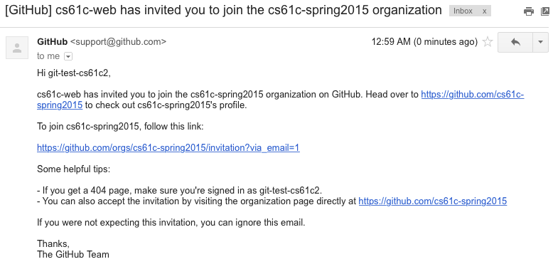
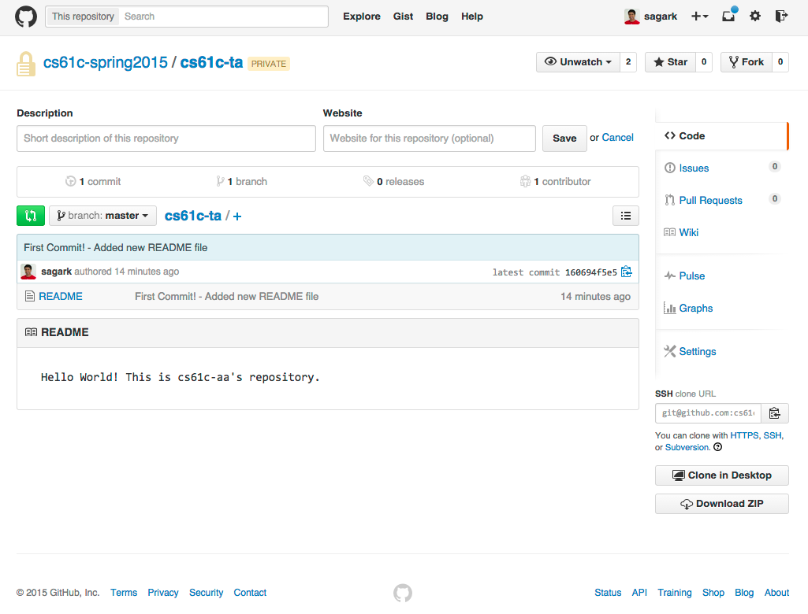

Goals
- Setup your class account.
- Learn git and setup your GitHub private repository.
- Build more intuition for working with binary.
- Get to know your classmates!
Reading
- P&H (4th or 5th): 2.4
Policies and Partners
You are REQUIRED to have a partner for lab checkoffs. This will reduce the number of check-offs we have to perform (allowing us to answer more of your questions) as well as give you someone to discuss class material with. BOTH partners will need to be present at check-off to receive credit and both partners will be asked to participate during the check-off. Try your best to find someone in your lab section with similar work habits as yourself.
How Checkoffs Work
You'll notice that at the end of (almost) every exercise, there is a section labelled "Check-off." The items in this section are what you must successfully demonstrate to your TA in order to receive credit for completing the lab. Once you and your partner finish ALL of the exercises, you should put your names AND logins on the checkoff list on the board, and a TA or Lab Assistant will come and check you off.
Labs in CS61C are graded out of 4 points. A lab is considered on-time if it is turned in within a week of the lab session in which it is initially assigned to you. For example, the lab assigned to you in this weeks lab is this document, lab 0. Thus, the latest you may get lab 0 checked off for full credit is the beginning of your lab next week. Each week that the lab is late past this point, you lose one point on the lab.
The CS61C Lab Machines
In CS61C, we will use the machines in 330 Soda for all work/grading purposes. Unfortunately, although the lab is open this week, the machines are not yet ready for use. Instead, you can complete today's lab by ssh-ing into cory.eecs.berkeley.edu. We will discuss more about the machines in 330 Soda during next week's lab.
Exercises
In today's lab only, you should do exercises zero through three alone.
Exercise 0: Account Setup
Once you are logged in, you should do the following on your class account to ensure that your account has been setup correctly:
- Log into your account using the details on the form. Since the machines in 330 Soda are not ready yet, you should ssh into cory.eecs.berkeley.edu instead from your own laptop. Once you do so, you should be prompted to enter some personal information (name, SID) so that we can accurately assign grades at the end of the semester. Please be particularly careful when entering this information, as the later parts of this lab will reject your submission if your registration information is incorrect.
- If you were not prompted to enter your information in the last step,
run
registerat the command line. - Run check-register to confirm that your information is set as you'd expect.
- Finally, you should change your password. In Terminal, enter
ssh update.cs.berkeley.eduand follow the prompts. - Now you're ready to start the lab! The rest of the lab assumes that you remain ssh'd into your class account on cory.eecs.berkeley.edu.
Checkoff:
Run check-register and show the results to your TA.Exercise 1: GitHub Account Form
This semester, we will be requiring that you use git, a distributed version control system. Version control systems are better tools for sharing code than emailing files, using flash drives, or even other file sharing mechanisms like Dropbox.
We'll be using GitHub to host private repositories in which you'll store your code. If the previous sentence means nothing to you, don't be alarmed! We'll walk through the process shortly. But first, you'll need to create a GitHub account if you don't already have one.
To create an account, head over to http://github.com. On the homepage, fill in the requested fields to create an account. Make sure you note the username you choose, as we'll need to use that in the next step. It's highly recommended that you choose a somewhat professional username, since you'll likely want to link to your GitHub account on your resume in the future.
Now, fill in the Google form linked below. Again, please be extremely careful when entering the requested information - mistyping will likely get your submission rejected, at which point you'll have to talk to a TA to get your account fixed. To fill out the form, you will need to be logged into your berkeley.edu Google account. If you do not have a berkeley.edu email address, ask your TA to configure your repositories manually.
https://docs.google.com/a/berkeley.edu/forms/d/1lKi3BovJamplJMqgJE4usqVy5OZKHx0LTi4oPtq2EBQ/viewform
This form connects your GitHub username to a free private repository that we automatically create for you under the cs61c-spring2015 organization. The backend will take a couple of minutes to process your submission and then will send you an email, but you can continue to work on through this lab while you wait.
First, lets configure git so that it knows who you are. Run the commands listed below, replacing YOUR NAME with your first and last name (inside quotes) and YOUR EMAIL ADDRESS with the email address you used to register for your GitHub account:
$ git config --global user.name "YOUR NAME" $ git config --global user.email "YOUR EMAIL ADDRESS"
Next, in order to interact with GitHub without repeatedly entering a username and password, we'll need to setup an SSH key. To do so, follow the instructions here: GitHub Generating SSH-keys Guide (Adapted for inst machines)
Getting the following output at the end of Step 4 in the above link means your setup was successful:
Hi username! You've successfully authenticated, but GitHub does not provide shell access.
Exercise 2: Learn git
Visit try.github.com to work through a quick hands-on introduction to git and GitHub (a host for git repositories). You can stop after completing section 1.25 ("The Final Push"). Here, you'll work on a "simulated" repository, so that you get some experience before you create your actual coursework repository. Don't worry if you don't feel like an expert after this tutorial - git is a complicated program, so we'll be incorporating it into upcoming assignments to help you familiarize yourself with its intricacies.
Checkoff:
- Show your TA the completed try.github.com tutorial.
Exercise 3: Create your git repository for CS61C
Since we've already done a whirlwind tour of git in the last exercise, let's jump right in and create a local repository to house our coursework for CS61C:
First, we'll make a directory that represents the highest-level ("root") directory in our git repository. We'll call this directory "work", place it in the home directory of our class account, and enter into the directory:
$ mkdir ~/work $ cd ~/work
Next, we'll run git init, which will place our ~/work directory under version control.
$ git init
As in the last exercise, this will create a directory inside ~/work called .git/. This is where git stores all of the information about your repository.
We won't need to work with any files for the number-representation part of this lab, so let's create a dummy README file to put under version control:
$ echo "Hello World! This is cs61c-XX's repository." > README
Now, type git status. You should get output like the following:
On branch master
Initial commit
Untracked files:
(use "git add <file>..." to include in what will be committed)
README
nothing added to commit but untracked files present (use "git add" to track)
Here, git is telling us that we have a file named README that is not tracked as part of the repository.
In order to place the file under version control, let's use git add to stage the README file to be committed. Since README is a new file, we're telling git to begin tracking changes to the file. Essentially, by using the git add command, we are telling git which changes we want added to the repository when we next type git commit. A commit is basically a snapshot of all of the files in your repository at some point in time.
[tell git to start tracking the README file:] $ git add README
Now, if you type git status once again, you'll see output like the following:
On branch master
Initial commit
Changes to be committed:
(use "git rm --cached <file>..." to unstage)
new file: README
This output indicates that we've now staged the README file to be committed to the repo next time we type git commit.
Now, we will actually make a commit using git commit. This command will take a commit message, which will allow us to easily identify what was added or changed in the repo at this point in time.
$ git commit -m 'First Commit! - Added new README file'
Now, if you once again type git status, you'll see output like the following:
On branch master nothing to commit, working directory clean
This is exactly what we wanted. Since we just made a commit, the files in the directory and the versions of them known to git are the same. Thus, git reports that the current working directory (~/work) is clean.
Now, if you type git log, you should see the commit history of your repository:
$ git log
commit 160694f5e5a229a12c82262511756cef1d0714c0
Author: Sagar Karandikar <skarandikar@berkeley.edu>
Date: Thu Jan 22 14:33:41 2015 -0800
First Commit! - Added new README file
Once you make more commits, the output of git log will show you information about the most recent commits in the repository.
As it stands, there are two problems with our local repository:
- We don't have a backup copy. You should always backup your code!
- Our local copy is private only to us. What if we want to share our code with our project partner?
We will resolve both of these issues by using GitHub. GitHub will store a "remote" copy of our repository. This serves both as a backup that we can re-clone if we accidentally destroy our local copy and allows us to share the contents of the repository with other GitHub users if we'd like.
Currently, we only have a single local copy of our repository. Let's go ahead and push to our private repository on GitHub. In order to do so, we'll need to add a "remote", which points to our space on GitHub. You should replace cs61c-xx in the command below with your login:
[in the command below, you MUST replace cs61c-xx with your login] $ git remote add origin git@github.com:cs61c-spring2015/cs61c-xx
At this point, you should go check the email address you used to sign up for GitHub. You should see an email that looks like the following:
Follow the link in the email. Once you do so, you should see your repository, named after your class account login (cs61c-xx). Unlike default repositories you create on GitHub which are public, this repository is private and visible only to you and the CS61C Staff. This is important when doing coursework since you don't want to share your work with the entire class.
Now that our repository exists on GitHub, let's tell git to send the contents of our repository to GitHub. We do this with the git push command, specifying where we want to send the code (to "origin", which we defined above) and the branch ("master"). We will cover branches in more detail later on.
$ git push -u origin master
Now, let's head to the GitHub website and click on the repo name (your class account login). Alternatively, you can go directly to https://github.com/cs61c-spring2015/cs61c-xx, replacing xx with the two letters at the end of your class account login. You should see something similar to the screenshot below:
Woo! Notice how our README file is now uploaded to the copy of the repository on GitHub. Anything that you commit to the repository and then push will be stored on GitHub in addition to your local copy of the repository.
As we do more work in this course, you should create subdirectories in this repository to place your projects. The general workflow you'll use will adhere to the following format:
$ cd ~/work $ mkdir assignment_name $ [copy assignment files into the assignment_name directory as instructed by the assignment] $ git add assignment_name/ $ git commit -m 'adding skeleton for assignment_name' $ git push origin master $ [work on assignment, modifying files in the ~/work/assignment_name directory] $ git add -u # the -u tells git to stage changes to all known files - aka skeleton files you filled in $ git commit -m "completed question 1 in assignment_name" $ git push origin master $ [go back to "work on assignment step," repeat until done assignment]
At this point, we've covered enough of the basics of git to make it useful as a code backup system. In a later lab, we'll discuss more about how to use git as a collaborative tool. We'll explore topics like branching, merging, and pulling.
Checkoff:
Show your TA your private repository on the GitHub website with the README committed.Exercise 4: Binary Alphabet
At this point, you may begin to work with a partner.
Let's take 4-bit numbers. If we stack five 4-bit numbers on top of each other in binary, we can make patterns and pictures! To help visualize this, you can think of 0's and 1's as white and black instead. For example, what does the following bit pattern look like?
| 0 | 1 | 1 | 0 | □ | ■ | ■ | □ | |
| 1 | 0 | 0 | 1 | ■ | □ | □ | ■ | |
| 1 | 1 | 1 | 1 | --> | ■ | ■ | ■ | ■ |
| 1 | 0 | 0 | 1 | ■ | □ | □ | ■ | |
| 1 | 0 | 0 | 1 | ■ | □ | □ | ■ |
Checkoff:
- What five decimal digits produce the pattern above? What five hexadecimal digits?
- What letter is drawn with 1,1,9,9,6? 0xF8F88?
- What is the hexadecimal representation you would use to spell the letter 'B'? 'N' (you probably won't want to use 5 hex digits for this one)?
Exercise 5: 1,000 $1 Bills
I hand you a thousand $1 bills and ten envelopes. Your job is to find a way to put various numbers of dollar bills in those ten envelopes so that no matter what amount of money I ask you for (between $1-1000), you can simply hand me some combination of envelopes and always be assured of giving me the correct amount of cash.
Checkoff:
- Explain to your TA how to distribute the dollar bills in the ten envelopes.